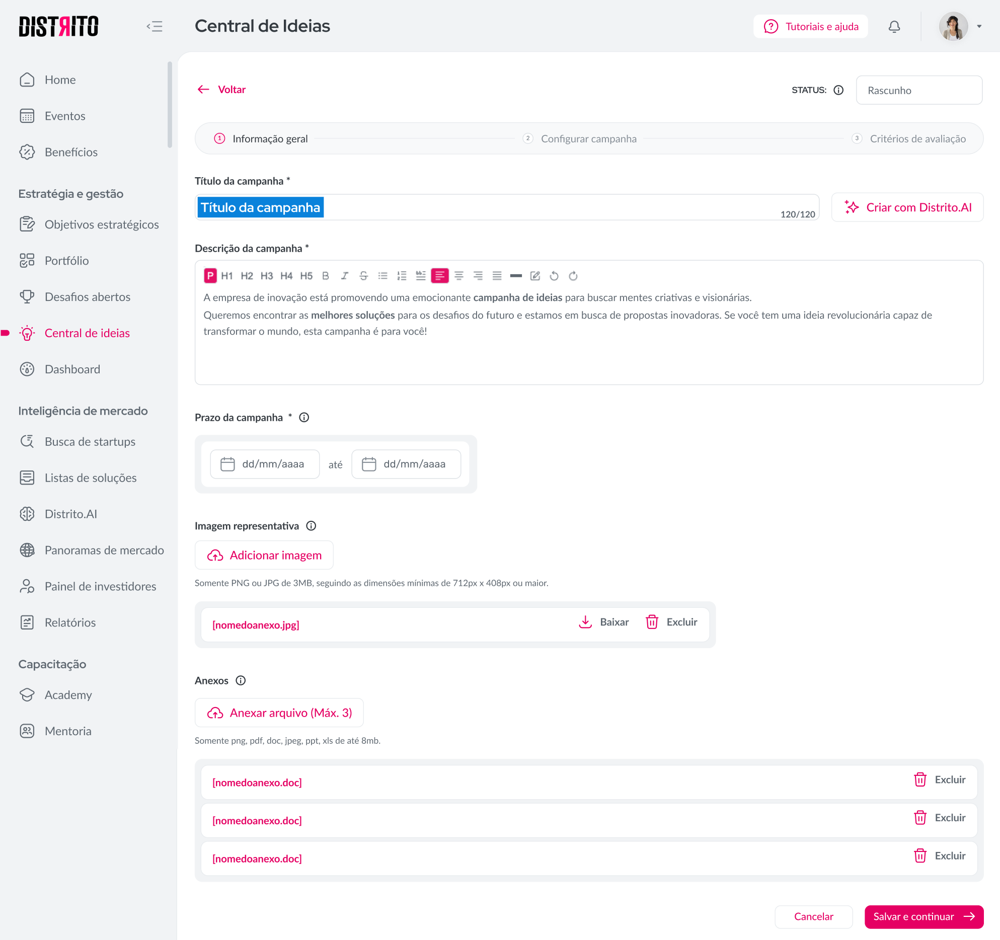
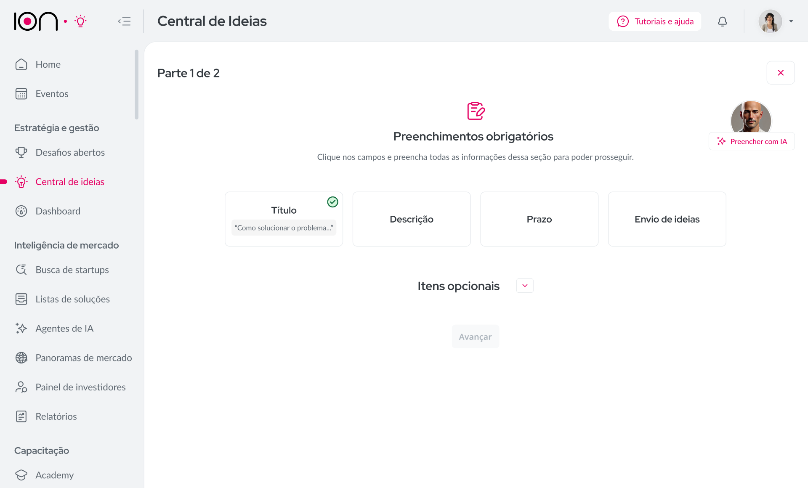

A feature Central de Ideias consiste em uma aba dentro da plataforma do Distrito que possibilita que as empresas façam pesquisas com seus funcionários, buscando aprimoramentos vindos de um olhar interno. O problema é que essas ideias eram coletadas através de um formulário complexo, longo e burocrático, e isso fazia com que muitos usuários abandonassem o preenchimento (ou nem começassem) por falta de tempo, interesse ou até de compreensão.

Teríamos que tornar esse envio muito mais simples e atrativo, sem perder a estrutura e nos atentando à obrigatoriedade dos campos — que, depois de certas pesquisas, descobrimos que 80% do preenchimento era opcional, mas não aparentava ser.
Para isso, gamificamos esse processo através de "fases" de preenchimento e demos muito mais ênfase aos (poucos) itens obrigatórios. Assim, o que era um grande formulário com infinitos campos de texto virou uma simples tela, com alguns botões de ação e uma compreensão imediata.
Depois de implementadas as mudanças, a feature passou a receber mensalmente 75% mais ideias, sendo do agrado das empresas, que obtinham mais insumo (e mais simplificado) para suas pesquisas, e dos funcionários, que conseguiam ser muito mais produtivos no dia a dia por perder menos tempo nos formulários.
